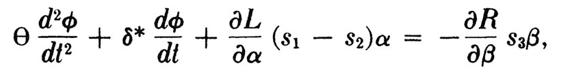

Круглая Радуга
2.
Un Perm’ au Казино Герман Геринг
Великий гребень—зелёное равноденствие и превращение, сонных рыб в молодого барашка, водной дрёмы в пробудившийся огонь, прихлынув катится к нам. За Западным фронтом, в Бляхероде среди гор Гарца, Вернер фон Браун, с рукой загипсованной после недавней поломки, готовиться отпраздновать свой 33-й день рождения. В дневное время громыхает артиллерийская канонада. Русские танки вздымают пылевые фантомы над Германскими пастбищами. Аисты вернулись из тёплых краёв и появились первые фиалки.
В «Белом Посещении», дни, вдоль отрезка мелового побережья, стали прекрасно ясными теперь. Девушки из офисов перестали укутываться в несколько свитеров за раз и груди снова бугрятся для обозрения. Март прибрёл как ягнёночек. Лойдж Джордж при смерти. Приблудные гуляки уже замечаются вдоль всё ещё запретного пляжа, сидят себе среди заброшенной сети стальной арматуры и тросов, штаны закатаны до колен, или до волос выпущенных на волю, продрогшие серые пальцы ног пошевеливают гальку. Чуть дальше от берега, под водой, проложены мили секретного трубопровода, нефть готова, с поворотом задвижки, выплеснуться и поджарить Германских захватчиков, которые застряли в устаревших уже кошмарах… горючее в ожидании гиперголичного возжигания, либо майского бунта души, чтобы под бодрую мелодию баварского музыкотворца Карла Орфа
Iam amore virginali
Totus ardeo . . .
воспламенить всю эту крепость-побережье, от Портсмута до Дангениза, полыхать весенней любовью. Такие вот замыслы вынашиваются ежедневно в самых шустрых из голов пребывающих в «Белом Посещении»—зиме собак, чёрных снегопадов из бессвязных слов, приходит конец. Скоро мы оставим её позади. Но оказавшись там, позади нас—продолжит ли она испускать свой затаённый холод, вопреки раздуваемым в море пожарам?
В Казино Герман Геринг новый режим приходит к власти. Единственно знакомым остаётся теперь лишь лицо Генерала Виверна, хотя его, похоже, понизили. Собственное представление Слотропа о сговоре против него заметно пошло в рост. Прежде заговор был монолитным, всемогущим, вне пределов его досягаемости. До той упойной игры, и той сцены с Катье, и двух нежданных расставаний. Но теперь—
Пословицы для Параноиков, 1: Тебе никак не позволяется коснуться Хозяина, но можешь щекотать его творения.
И потом, ну, он с недавних пор начинает осваивать способ приходить в особое состояние сознания, не то, чтобы сон, а так называемые «грёзы», только цвета там довольно резкие, не пастельные… и в такие моменты ему кажется будто он прикоснулся, и остался притронутым, на какое-то время, к знакомой нам уже душе, к голосу, который не раз вещал через медиума исследовательского заведения Кэрола Эвентира: снова покойный Роланд Фельдпат, издавна привлечённый специалист по системам управления, формулам наведения, реагированию на ЧП в одном или ином из Заведений Аэронавтики. Похоже на то, что, по неким личным мотивам, Роланд продолжает зависать над этим Слотропианским пространством, как залитом светом солнца, чья энергия едва ли до него доходит, так и в бури щекочущие его спину статичным электричеством, шептания Роланда доносятся с восьми километров, крутая высота, где он расквартирован на одной из Последних Парабол—куда никогда не следует распространять зону полётов—занимая теперь должность одного из невидимых Ограничителей в стратосфере, на безнадёжно обюрократившейся той стороне, ничуть не в меньшей мере, чем всегда было и на этой, он поджал свои астральные растопырки насколько можно было рассчитывать, примазался к «небу», такой весь из себя взвинченный провалами попыток установить контакт, по причине бессилия кое-каких сновидцев, что пытаются пробудиться, либо заговорить, да не выходит, и брыкаются против гирек и щупов черепной боли, той что, похоже, при пробуждении станет и вовсе невыносимой, он дожидается бесцельных, не вызванных необходимостью появлений тут пеньтюхов наподобие Слотропа—
Роланд в мандраже. Может вон тот? Или тот? станет марионеткой в ближайшем воплощении? Ё-моё. Помилуй, Господи: ну, и штормит, что за чудищ Эфира вообще раздрочил этот Слотроп, для кого он наживка?
Как видно, Роланду придётся попыхтеть, тут уж ничего не поделаешь. Раз уж они до такого доходят, он им растолкует свои понятия об Управлении. В этом одна из секретных миссий его смерти. Загадочные высказывания, что выдавал он в ту ночь в Сноксоле насчёт экономических систем, всего лишь ежедневный фон будничной болтовни на этой стороне, привходящее условие существования. В особенности порасспросите Немцев. О, это и впрямь печальная история, как подло использовалась их Schwärmerei к Управлению теми, кто дорвался к власти. Параноидные Системы Истории (ПСИ), скоропостижно пропавшее периодическое издание 1920-х, все выпуски которого мистически исчезли, есессно, предполагали даже, более чем в одной передовице, что вся Германская Инфляция была подстроена намеренно, просто загнать молодых энтузиастов Кибернетической Традиции в пахоту на Управление: в конце концов, экономическая инфляция, устремляясь в высь, как шар, в её своеобразном воспроизведении поверхности Земли, возносясь ценами всё выше, неуправляемо, день за днём взлетала всё выше и выше, а конструктивная система призванная удерживать стоимость марки постоянной, так жалко провалилась…. Идентичный рост за оборот, идентичность роста, ноль изменений, и тишина, таким образом, навеки, такими были тайные считалочки детства Науки Управления—тайные и ужасные, как повествуют багровые истории. Отклоняющиеся колебания любого рода это почти Худшая из Угроз. Ты не мог раскачивать качели на этих игровых площадках выше определённого угла от вертикали. Драки прекращались быстро, со сноровкой, которая не заставила себя ждать. Дождливые дни никогда не позволяли себе лишнего грома и молний, а только высокомерно стеклянная серость скапливалась в нижних слоях, монохромный вид долин заполненных мшистой трухой, корнями торчащими к небу с не слишком злобной игривостью (вроде определённого белого сюрприза для элитарников, там наверху, которые никогда не замечают, нет… ), долины переполняются осенью, и увядают с дождём, стародевственно коричневые за её золотом… весьма избирательно дроблённый ливень выманивает тебя через участки в окраинные улочки, что становятся всё загадочней и хуже мощёными, и всё плотнее спланированными, участок втискивается в перекрученный другой раз семь, а то и больше, углами каменной ограды, с выкрутасами оптического дневного времени, покуда не вырвемся, разгорячённые, примолкшие, из крайнего района улиц за город, в чересполосицу тёмных полей и перелесков, к началу настоящего леса, где предстоящее испытание понемногу начинает возникать, и наши сердца чувствовать страх… но, как ни одни качели не в состоянии размахнуться дальше определённой высоты, так же и лес, за пределы определённого радиуса, не пускает проникнуть, до сих и не далее. Предел присутствовал всегда, чтобы в него упереться. И до чего же легко было расти при подобной упорядоченности. Всё являлось до того цельным, насколько можно. Кромки едва ли вообще удавалось приметить, ещё меньше заглянуть за них. Разрушение, о, и демоны—да, в том числе и Максвелов—таились глубоко в лесах, с прочим зверьём, в склепах и недрах редутов твоей безопасности….
Точно так же и жуткий пробег Ракеты был сведён, буквально, к буржуазным терминам, терминам уравнения, как тот элегантное сочетание философии и материальной конструкции, абстрактный переход и ключевой механизм из настоящего металла, которое описывает движение в аспекте контроля направления:  сохраняя, владея, направляя между Скиллой и Харибдой на протяжении всего пути до Brennschluss. Если кто-то из молодых инженеров замечал соответствие между глубоким консерватизмом Обратой Связи и жизнями всякого рода, которые им доводилось вести по ходу процесса прожития их, то оно утрачивалось или заморачивалось—никто из них не пользовался связью, во всяком случае при жизни: потребовалась смерть, чтоб Роланд Фелдпат её обнаружил, смерть плюс очень большая вероятность, что Слишком Поздно, и несчётное число прочих душ, что чувствуют себя, даже теперь, Ракетоподобными, уносясь к огонькам каменной синевы Управляемого Вакуума, имя которого им вряд ли известно… освещение тут на удивление мягкое, бархатистое, как небесные одеяния, ощущение многонаселённости и невидимой силы, обрывков «голосов», мимолётные видения бытия иного порядка….
После чего Слотроп оставался не то, чтобы с каким-то чётким символом или схемой, а скорее с щемящим привкусом горечи, не поддающаяся сокращению чуждость, непроницаемая самодостаточность….